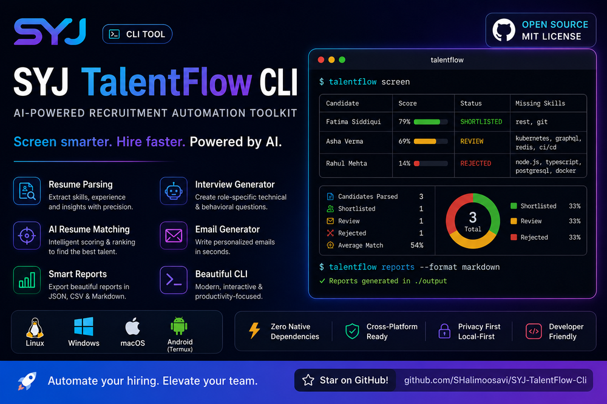

Resume parsing
Extracts name, contact, skills, experience, education, certifications, and projects from TXT and Markdown resumes into structured JSON.
SYJ TalentFlow CLI parses resumes, scores candidates against your job description, ranks them, and drafts interview kits and recruiter emails — from a single command, on any machine you already own.
$ git clone github.com/SHalimoosavi/SYJ-TalentFlow-Cli.git && npm install
| Candidate | Score | Status |
|---|---|---|
| Fatima Siddiqui | 79% | SHORTLISTED |
| Asha Verma | 69% | REVIEW |
| Rahul Mehta | 14% | REJECTED |
✔ Reports generated in ./output
Nine focused capabilities, each usable on its own or chained into a full pipeline.
Extracts name, contact, skills, experience, education, certifications, and projects from TXT and Markdown resumes into structured JSON.
Combines keyword overlap, weighted skills/experience scoring, and optional AI semantic evaluation against your job description.
Classifies every candidate into Shortlisted, Review, or Rejected using configurable thresholds — exported as CSV, JSON, or Markdown.
Produces technical, behavioural, culture-fit, resume-specific, and follow-up questions for every shortlisted candidate.
Drafts interview invitations, rejections, info requests, final-round invites, and offer prep in formal, friendly, startup, or corporate tone.
ASCII banner, progress bars, status badges, and ranking tables — a terminal UI that reads like a real product, not a script.
Identical behavior on Windows, Linux, macOS, and Android Termux, with zero native dependencies to break your install.
MIT-licensed on GitHub, with a documented architecture, test suite, and contribution guide — built to be forked and extended.
Bring your own key: Anthropic, OpenAI, or OpenRouter, switchable with a single environment variable — never hardcoded.
Real output from talentflow screen — candidate rankings, score bars, and status badges, rendered straight to your terminal.

Select a command to see exactly what it does.
✔ Node.js version — v22.x (requires >=22)
✔ AI_PROVIDER value — anthropic
⚠ AI provider credentials — API key missing
✔ resumes directory — found
ℹ Environment looks good. Run "talentflow screen" to get started.
→ Parsing resumes from resumes/
✔ Parsed asha-verma.txt
✔ Parsed fatima-siddiqui.txt
✔ Parsed rahul-mehta.md
ℹ Parsed 3 resume(s) → output/parsed
→ Scoring candidates…
| Candidate | Score | Status |
|---|---|---|
| Fatima Siddiqui | 79% | SHORTLISTED |
| Asha Verma | 69% | REVIEW |
ℹ Reports written to output/
✔ Interview kit written for Fatima Siddiqui → output/interviews/fatima-siddiqui.md
ℹ Generated 1 interview kit(s) → output/interviews
# Technical Questions
- Walk me through designing a system using Node.js at scale.
✔ Reports regenerated:
output/report.md
output/report.json
output/report.csv
Each stage is a separate, testable module — business logic stays independent of the CLI layer.
TXT / Markdown input
Structured JSON
Keyword + weighted
Semantic scoring
MD / JSON / CSV
Decision + outreach
Switch providers with one environment variable — no code changes required.
Claude models for semantic resume scoring and drafting.
Supported nowGPT models via the standard chat completions API.
Supported nowAccess many hosted models through a single API key.
Supported nowLocal model inference, no API key required.
PlannedRun local models with a friendly desktop UI.
PlannedAny OpenAI-compatible local inference server.
PlannedTalentFlow CLI trades a monthly invoice and a locked-in dashboard for a tool you own outright.
AI-powered recruitment automation toolkit for the command line. Cross-platform, dependency-light, MIT licensed.
View repository